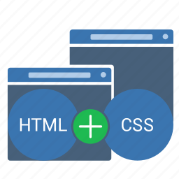

Dovednosti
|  |

|
|
HTML5 & CSS3:S HTML5 & CSS3 začínám a umím vytvořit jednoduché webové stránky, jako jsou tyto. |
JAVA:Javu se učím z tutoriálů na ITnetwork, dokáži tvořit jednoduché desktopové aplikace a ,,malé" CRUD webové aplikace za pomoci MySQL databáze a Springbootu. |
Github & Git:Github a Git jako jeden z vícero dovedností jsem se naučil sám za pomoci tutoriálů na youtube, zde naleznete i mé dosavadní práce (odkaz naleznete na hlavní stránce v části ,,patička" stránky.). |